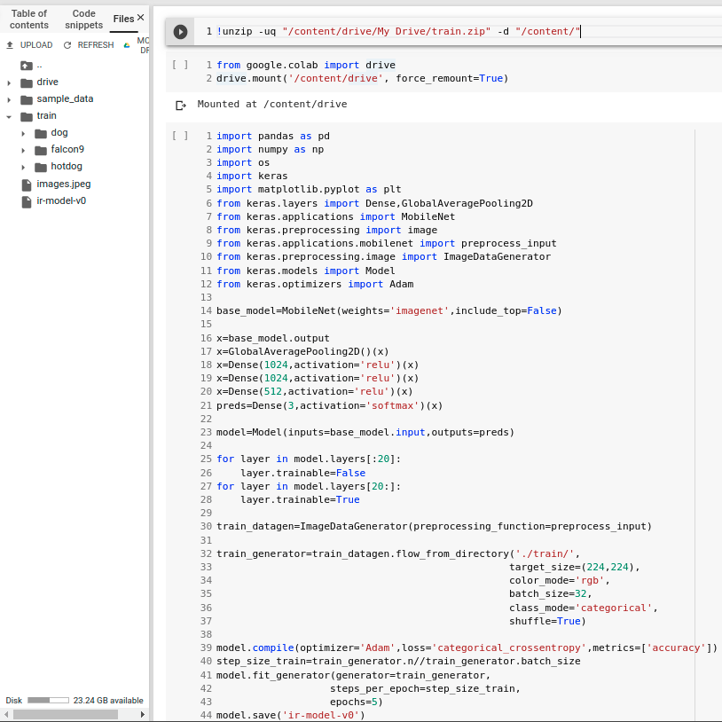

Table of Contents
By the end of this workshop, you will learn how to train and use an image recognition neural network.
Credit to Aditya Ananthram for creating the original workshop. Use the button below to check out his tutorial:
This workshop expands Aditya's tutorial by adding instructions for how to gather your own data and how to use the neural network.
Neural networks are a relatively new technique for artificial intelligence inspired by the human brain. We won't go in depth on how neural networks work here, but if you're curious, the Youtube Channel 3Blue1Brown has a great series on how neural networks work. To explain how neural networks work shortly, you can imagine a neural network as a person trying to learn how to do a multiple choice test. To train this person, we give it several multiple choice practice tests, and this person will at first randomly guess at the answers, however the more practice tests we give it, the better the person is at answering the test, as it learns from trial and error.
Before we continue, if you haven't already, follow this workshop on how to set up Google Colab:
To train our neural network, we require large amounts of data. To gather your data, click the button below to add the Fatkun image downloader to your Chrome browser:
Fatkun will help us download images en masse from Google Images so we can train our neural network. Pick three things you want your neural network to recognize. I am choosing dogs, Falcon 9s, and hot dogs.
First, open your settings by clicking on the three vertical dots on the right, then clicking on Settings.
Scroll to the bottom and click on 'Advanced'. Then, scroll down to 'Downloads' and turn off the setting that says 'Ask where to save each file before downloading'
Feel free to change the download location so it doesn't make a huge mess wherever it downloads.
As an example, I will search up dog in Google Images, then use the command Alt-Z to see the images that I will download. Click on any images to deselect them from the download if you think they don't have anything to do with dogs, for example the Google logo, your profile picture, and the camera icon. Now click the 'Download' button on the top left. Repeat this process for the other things you want the neural network to recognize. Each category of images should be in one folder, with the folder named as the thing in the images. In the end you should have a folder structure like this:
train
|_ dog
|_ falcon9
|_ hotdog
Now you should compress the entire train folder into a ZIP file. To do this, select the train folder, navigate to the share tab in the file explorer, and click the Zip button.
Once you have compressed the folder into a zip file, upload it to your Google Drive. After, go to google Colab, click '+ Code', and type in the new box:
from google.colab import drive
drive.mount('/content/drive', force_remount=True)
Run this snippet of code by clicking the little play button on the left of the box. Follow the instructions in the output of the box. This will import your Google Drive into Google Colab so you can access all the files from your Drive.
Now let's decompress the zip file by clicking '+ Code' again, and adding these commands:
!unzip -uq "/content/drive/My Drive/train.zip" -d "/content/"
Now if you open the left pane by clicking on the small arrow on the left, and go to the 'Files' tab, and click 'REFRESH' you will see a new folder named train there.
"Get to the coding already!"
I hear you! Here's the section that I'll warn you to not copy and paste, but since this is a hard workshop, I'm assuming you already know your stuff. Let's start by putting in the imports we'll need. Click the '+ Code' button and add all of the following code in the newly created box.
import pandas as pd
import numpy as np
import os
import keras
import matplotlib.pyplot as plt
from keras.layers import Dense,GlobalAveragePooling2D
from keras.applications import MobileNet
from keras.preprocessing import image
from keras.applications.mobilenet import preprocess_input
from keras.preprocessing.image import ImageDataGenerator
from keras.models import Model
from keras.optimizers import Adam
We'll be using the Keras library for training, since Keras is a very simple and intuitive library for beginners. We'll be using a method called transfer learning. This is where we take a model already trained by someone else, then retrain it to classify our images. We will be using the model known as MobileNet.
Here we import the MobileNet model and discard the 1000 output neurons, add three layers of dense networks and 3 output neurons, corresponding to our three image categories. In the future, if you want to add more image categories, you will have to modify this last output layer of neurons to however many neurons you will need corresponding to the number of image categories you have.
import pandas as pd
base_model=MobileNet(weights='imagenet',include_top=False)
x=base_model.output
x=GlobalAveragePooling2D()(x)
x=Dense(1024,activation='relu')(x)
x=Dense(1024,activation='relu')(x)
x=Dense(512,activation='relu')(x)
preds=Dense(3,activation='softmax')(x)
Next, we put the output layer into this model class and lock the first 20 layers because we don't want to train those, and unlock the rest for training.
model=Model(inputs=base_model.input,outputs=preds)
for layer in model.layers[:20]:
layer.trainable=False
for layer in model.layers[20:]:
layer.trainable=True
In this next piece of code, we let a library process our data for us. Normally, this is done by yourself, which can be a bit tedious.
train_datagen=ImageDataGenerator(preprocessing_function=preprocess_input)
train_generator=train_datagen.flow_from_directory('./train/',
target_size=(224,224),
color_mode='rgb',
batch_size=32,
class_mode='categorical',
shuffle=True)
Now, we'll compile the model for training, and "fit" the model, another word for training.
model.compile(optimizer='Adam',loss='categorical_crossentropy',metrics=['accuracy'])
step_size_train=train_generator.n//train_generator.batch_size
model.fit_generator(generator=train_generator,
steps_per_epoch=step_size_train,
epochs=5)
model.save('ir-model-v0')
You may have noticed the epochs=5 bit in the code block. Epochs are how many times the neural network trains on all of the data once, in this case 5. You can adjust this number to be more, or less. The more it trains, the more accurate it becomes. The less, the faster it trains. There are caveats to both situations. The more epochs you train, the more likely the neural network will "memorize" the data, producing a situation called overfitting. This means it will have a high training accuracy, but when you test it, it may have a very low actual accuracy. The less epochs you have, the faster the network will train, but the less accurate it will be.
You are now ready to train! Hit the run button on the left side of the code box. You will see some output and a progress bar telling you how the neural network is doing. Wait for all 5 epochs to complete, and then click 'REFRESH' on the left pane, and you will see a new file called ir-model-v0. This is the model that the training produced, and you can now use it to do some image recognition!
First, we'll need to find a picture that the neural network has never seen. You can try scrolling down the Google Image search you did previously. For example, I picked a picture of the Falcon 9 that wasn't used for training. Download that image, rename it to images.jpeg and drag it into the Files section on the left pane.
Let's start the coding by clicking '+ Code' and making a new code box and put in our imports.
import numpy as np
from keras.preprocessing import image
from keras.applications.mobilenet import preprocess_input
from keras.applications import mobilenet
from IPython.display import Image
from keras.models import load_model
Now we load a model and define a function that helps us preprocess the image to be compatible with the input of the model.
model = load_model('ir-model-v0')
def process_image(img_path):
img = image.load_img(img_path, target_size=(224, 224))
img_array = image.img_to_array(img)
img_array = np.expand_dims(img_array, axis=0)
pImg = mobilenet.preprocess_input(img_array)
return pImg
Next, we load the image, process, and predict the image.
Image('images.jpeg')
im = process_image('images.jpeg')
prediction = model.predict(im)
print(prediction)
Your output should look something like this:
[[4.0999515e-10 1.0000000e+00 6.0768431e-15]]
This output represents how sure the neural network is of each category. For my categories of pictures, it is 4.1 x 10-8% sure that it is a dog, 100% sure that it is a Falcon 9, and 6.08 x 10-13% sure it is a hot dog.
In the end your code should look something like this:
That's it! You've now trained and used a neural network to analyse and predict what an image is! The buttons below have some more resources to learn about neural networks and python.